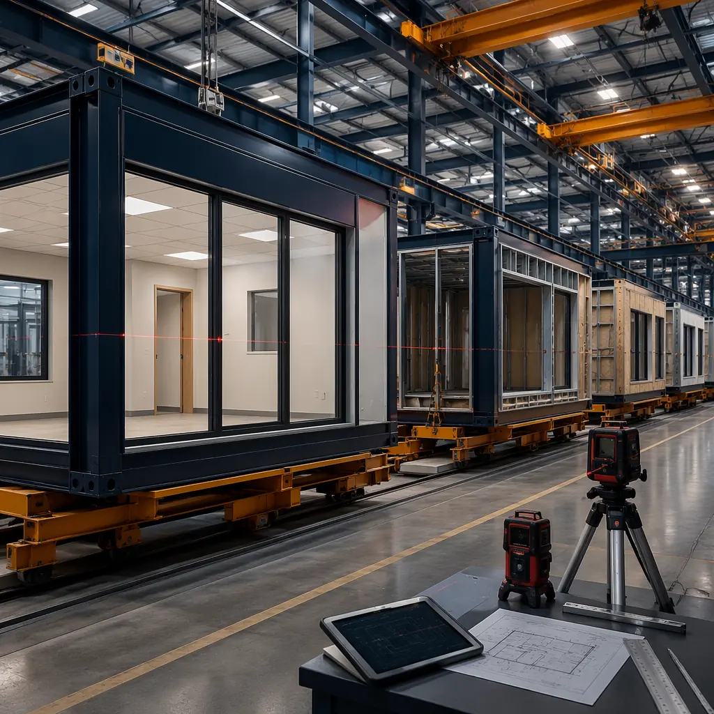
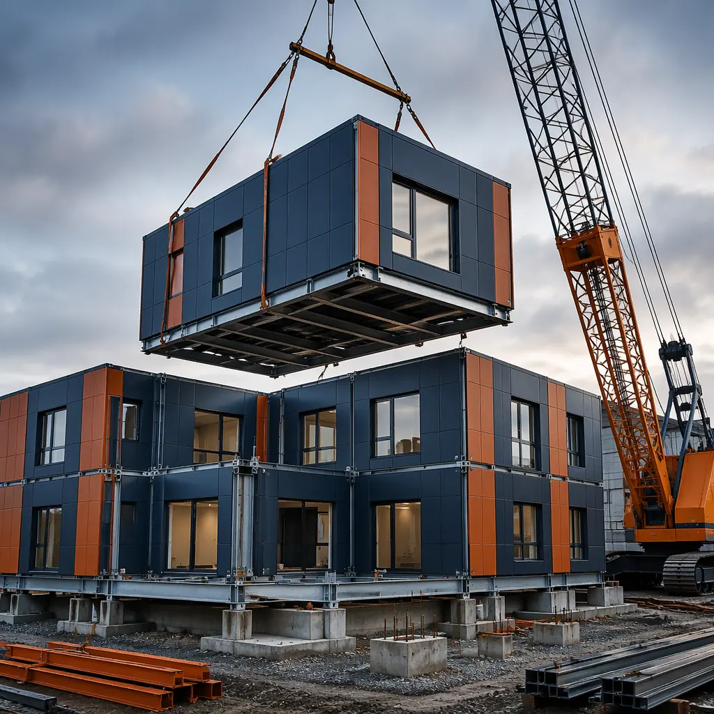
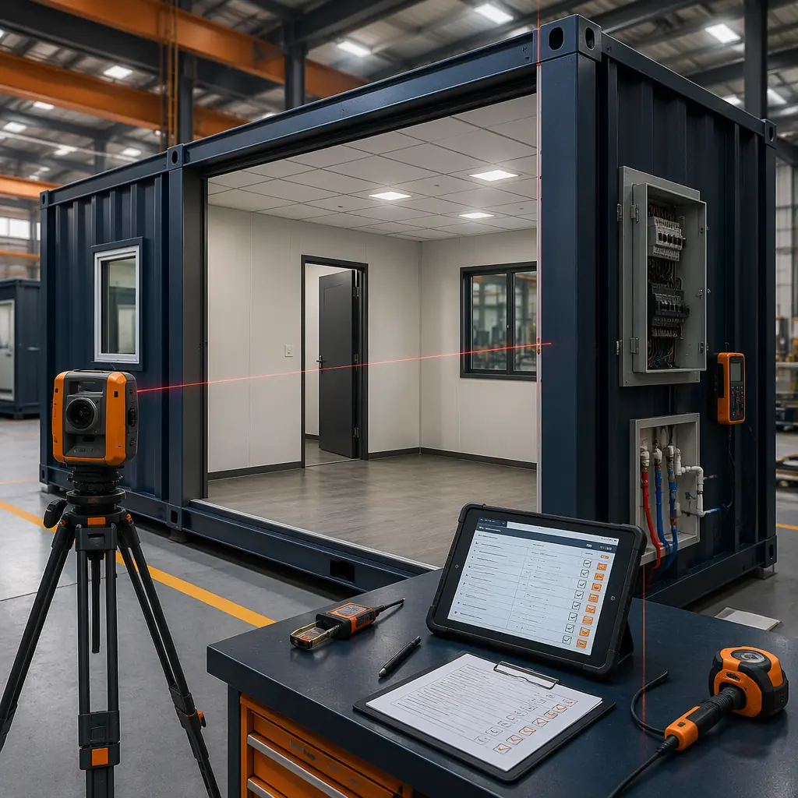
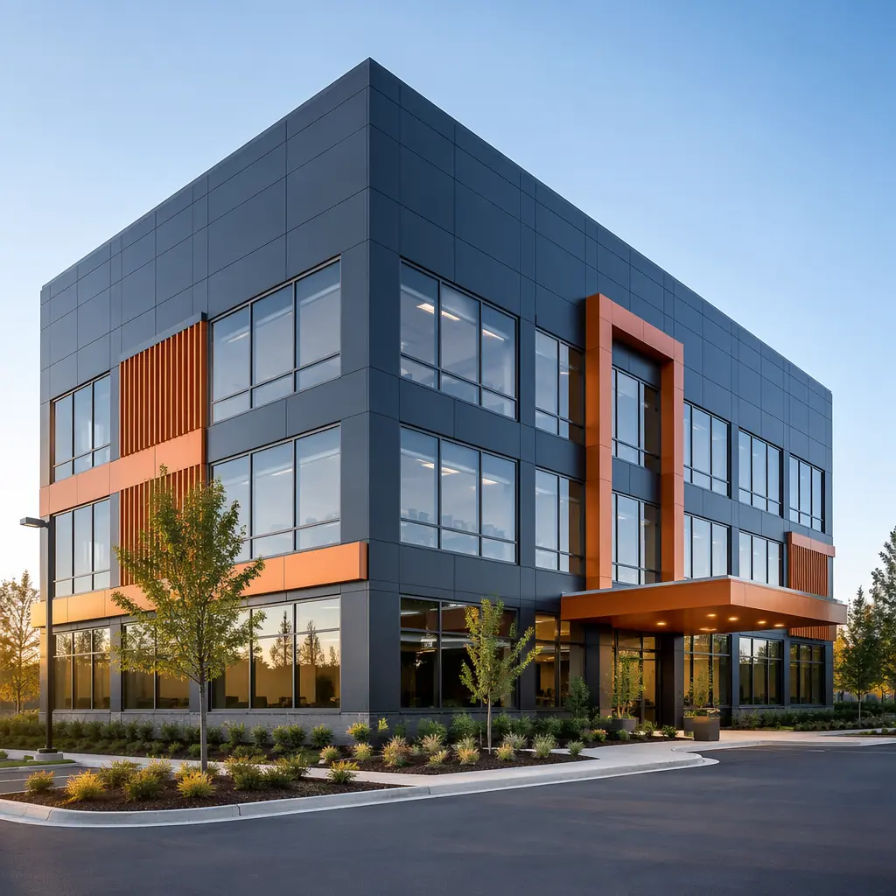

Tilt-up construction has dominated the US commercial and industrial building market for decades. Walk through any suburban office park, distribution center, or retail power center, and you are looking at tilt-up panels — concrete walls cast horizontally on the floor slab, then tilted up into position by crane. It is a proven method that delivers durable, low-maintenance buildings at competitive cost. But modular construction — where entire building sections are factory-assembled and transported to site as completed modules — is challenging tilt-up's assumptions on speed, quality, and total project cost. This comparison analyzes the two methods across the eight dimensions that matter most to developers: schedule, cost, design flexibility, quality control, structural performance, site constraints, sustainability, and long-term value.

How the Two Methods Actually Work: Factory vs Site-Cast
The fundamental difference between modular and tilt-up is where the building is produced. Modular construction moves 80–90% of the building process into a controlled factory environment. Steel-framed modules — complete with interior finishes, MEP rough-in, windows, and exterior cladding — are assembled on a production line, loaded onto flatbed trucks, and delivered to site as near-complete building sections. On-site work is reduced to foundation preparation, module setting by crane, module-to-module connection, and commissioning. A 50,000 sq ft modular office building typically requires 4–6 weeks of on-site activity after foundations are complete.
Tilt-up construction, by contrast, moves the factory to the site. After the concrete floor slab is poured and cured, workers build wooden formwork directly on the slab surface. Reinforcing steel is placed, embeds for lifting and connections are positioned, and concrete is poured into the forms. Panels cure for 7–14 days before they can be lifted. A crane then tilts each panel from horizontal to vertical and sets it onto the footing. Once all panels are erected, the roof structure is installed, followed by interior framing, MEP, finishes — all performed in sequence on an open site exposed to weather. A 50,000 sq ft tilt-up building typically requires 16–24 weeks of on-site construction.
This distinction — factory production vs site-cast production — is the root cause of every cost, schedule, and quality difference between the two methods. Our modular vs precast comparison examines a related but distinct concrete methodology.

Schedule: 8 Weeks vs 20 Weeks — Where Modular Wins Decisively
Schedule compression is modular construction's strongest competitive advantage against tilt-up, and the numbers are unambiguous. A modular project achieves parallel-path construction: site work (foundations, utilities) proceeds simultaneously with factory module production. The day foundations are complete, finished modules — with interiors, MEP, and cladding already installed — arrive on flatbed trucks and are craned into position. Tilt-up, by contrast, is strictly sequential: slab → forms → rebar → pour → cure → tilt → roof → interior framing → MEP → finishes. Each phase must complete before the next can begin.
For a representative 50,000 sq ft single-story commercial building, the schedule comparison breaks down as follows:
| Phase | Modular | Tilt-Up |
|---|---|---|
| Site preparation & foundations | 4 weeks | 4 weeks |
| Building structure | 2 weeks (module setting) | 8 weeks (form, pour, cure, tilt) |
| Interior finishes & MEP | Concurrent with factory build | 8 weeks (sequential on-site) |
| Commissioning & closeout | 2 weeks | 4 weeks |
| Total from groundbreaking | 8–10 weeks | 20–24 weeks |
Weather compounds the schedule gap. Tilt-up panel curing requires minimum temperatures (typically 40°F/4°C) and protection from rain — a winter project in the Midwest can lose 3–5 weeks to weather delays alone. Modular factory production is weather-independent: modules are built indoors year-round, and on-site module setting can proceed in conditions that would halt a concrete pour. For developers carrying construction loans at 8–10% interest, the 10–14 week schedule advantage translates to $80,000–$140,000 in reduced interest carry on a $5 million project. Our modular construction financing guide details the carry-cost math.

Cost: Tilt-Up's Apparent Advantage vs Modular's Hidden Savings
On a direct hard-cost comparison (materials + labor + equipment), tilt-up typically quotes 10–15% lower per square foot than modular. The Concrete Reinforcing Steel Institute's 2025 cost survey puts tilt-up warehouse construction at $95–$130/sq ft, while modular steel-frame commercial buildings range $110–$155/sq ft depending on finish level, building type, and module complexity. But direct hard cost tells less than half the story. When developers evaluate total project cost — including schedule-dependent costs, quality-driven savings, and lifecycle performance — modular often delivers superior net economics.
Three categories of costs differentiate modular from tilt-up in ways the hard-cost bid obscures:
- Interest carry during construction. A $5 million project at 9% construction loan interest burns approximately $8,650 per week. Modular's 10–14 week faster delivery saves $86,000–$121,000 in interest alone — equivalent to $1.72–$2.42/sq ft on a 50,000 sq ft building. This saving is real cash flow, not an accounting estimate.
- Quality-driven rework avoidance. Tilt-up's site-cast concrete is vulnerable to honeycombing, panel cracking during lifting, and formwork misalignment — each defect requires costly patching, grinding, or panel replacement. Modular factory QC systems catch defects at the assembly station, not after the building is standing. Our factory QC deep dive explains the defect-prevention economics.
- Schedule certainty and carrying costs. Modular's factory production runs on a fixed takt time — 2–4 modules per day — providing schedule predictability that tilt-up's weather-dependent site casting cannot match. For retail tenants with lease commencement penalties or industrial operators with production deadlines, schedule certainty has hard dollar value that dwarfs the hard-cost premium. Our modular construction ROI guide quantifies the schedule-certainty premium for different building types.
For a detailed cost-per-square-foot analysis across construction methods, see our 2026 pricing guide.
Design Flexibility: Tilt-Up's Long Spans vs Modular's Architectural Range
Tilt-up's signature advantage is clear-span interior space. Because the concrete wall panels are load-bearing, the roof structure can span 60–100 ft between walls without interior columns — ideal for warehouses, distribution centers, and big-box retail where uninterrupted floor space is the primary design requirement. Modular construction uses steel frame modules typically 12–16 ft wide and up to 60 ft long, with interior load paths that may require columns at module junction points. For a 100,000 sq ft distribution center needing 80-ft clear spans, tilt-up is the structurally simpler solution.
But for buildings requiring interior complexity — offices, medical clinics, schools, hotels, apartments — modular's design flexibility surpasses tilt-up. Tilt-up interiors require extensive stick-framed partitions, dropped ceilings, and surface-mounted MEP runs built after the shell is complete. Modular delivers completed interior spaces from the factory: gypsum board walls painted and trimmed, ceiling tiles installed, plumbing and electrical roughed-in to fixture locations, HVAC ductwork run through the ceiling cavity. The architectural freedom to create varied room layouts, corridor configurations, and multi-zone spaces is inherent in modular's production methodology, not an add-on scope item.
For multi-story commercial buildings (2–6 stories), modular holds a clear advantage. Tilt-up panels become uneconomical above 2–3 stories because panel thickness and reinforcement increase disproportionately with height. Modular's steel frame modules are engineered for stacking to 6–12 stories without significant cost escalation — the same modules used in a 2-story office can be stacked to 6 stories with minor engineering adjustments. Our high-rise modular guide examines the engineering in detail.
Quality Control: Factory Precision vs Site Variability
Quality is the dimension where modular construction's structural advantage is most visible — and most undervalued by developers comparing only hard-cost bids. Tilt-up panel quality depends on the skill of the concrete crew, weather conditions during the pour and cure, and the consistency of formwork construction. A panel poured in 95°F heat cures differently than one poured at 55°F. A form built by a crew on its third 12-hour day may deviate from spec by enough to create visible joint misalignment at panel connections.
Modular quality control operates under fundamentally different conditions:
- Climate-controlled production. Modules are assembled at 65–75°F year-round. Welding procedures, adhesive curing, drywall finishing, and paint application all occur under consistent temperature and humidity — eliminating the weather-driven quality variation that affects every site-cast concrete building.
- Multi-gate inspection system. Each module passes through 5–7 defined QC gates: structural frame inspection (weld NDT, dimensional check), MEP rough-in pressure test, insulation and drywall closure inspection, finish inspection, and pre-shipment final audit. At each gate, defects are identified, corrected, and re-inspected before the module advances. MBI-certified manufacturers are audited on these QC systems annually.
- Dimensional tolerance of ±2 mm. Factory jigs and laser-guided assembly stations produce modules with dimensional tolerances tilt-up cannot approach. A tilt-up panel joint that varies 10–15 mm across its height requires substantial caulking and trim work to conceal. Modular module-to-module connections are engineered to ±2 mm, producing clean interior sightlines and weathertight exterior joints with minimal field adjustment.
For building types where interior finish quality drives tenant satisfaction and lease rates — offices, medical facilities, hotels — modular's QC advantage translates directly to revenue. Our lifecycle cost analysis quantifies the maintenance premium of site-built quality variation.

Site Constraints: When the Jobsite Decides the Method
Some sites favor one method decisively. Tilt-up requires a large, flat casting area adjacent to the building footprint — typically 1.5–2× the building area — to lay out panels for casting. On a 5-acre suburban greenfield site with generous setbacks, this is not a constraint. On a 0.8-acre urban infill lot surrounded by existing buildings, it is a dealbreaker. Tilt-up also requires crane access to lift panels from the casting bed, which means maintaining clear crane paths and material staging zones for the full 16–24 week construction duration.
Modular construction's site requirements are substantially smaller. Modules arrive on trucks, are lifted directly onto the foundation by crane, and connected within hours of arrival. The site needs crane access and a module staging area, but the total disturbed area is typically 40–60% less than tilt-up for an equivalent building. For brownfield sites, constrained urban lots, or projects adjacent to operating facilities, modular's smaller site footprint can be the difference between a feasible project and one that cannot be built. Our brownfield construction guide covers site constraint strategies in depth.
Sustainability: Factory Efficiency vs Concrete's Carbon Cost
Both methods have sustainability profiles, but they differ sharply on carbon. Tilt-up's concrete panels carry a high embodied carbon footprint: cement production alone accounts for approximately 8% of global CO₂ emissions, and a typical tilt-up building uses 25–35 cubic yards of concrete per 1,000 sq ft. While supplementary cementitious materials (fly ash, slag) can reduce the carbon intensity by 15–30%, the baseline is high.
Modular construction's sustainability advantage comes from three sources: material efficiency (factory optimization reduces steel waste to 2–3% vs 8–12% for site-built), reduced site disturbance (fewer deliveries, less construction traffic, shorter construction duration), and design for disassembly (steel-framed modules can be unbolted and relocated, while tilt-up panels must be demolished). Our embodied carbon analysis quantifies the differential at 30–50% less upfront carbon for modular construction. Design for disassembly extends lifecycle sustainability beyond initial construction.
The right comparison is not modular vs tilt-up in the abstract — it is modular vs tilt-up for your specific building type, site, and business case. A 100,000 sq ft distribution warehouse on a 10-acre greenfield site will almost certainly favor tilt-up. A 30,000 sq ft medical office building on a 2-acre urban site will almost certainly favor modular. The overlap zone — 15,000–60,000 sq ft commercial buildings on moderately constrained sites — is where rigorous total-cost analysis separates the two methods.

Decision Matrix: Which Method for Which Project?
Based on analysis of 200+ completed projects across both methods, the following decision framework guides method selection:
| Project Characteristic | Favors Modular | Favors Tilt-Up |
|---|---|---|
| Building size | 5,000–60,000 sq ft | 50,000+ sq ft |
| Interior complexity | Multi-room, varied layouts | Open plan, minimal partitions |
| Stories | 2–6 stories | 1–2 stories |
| Site constraints | Urban infill, brownfield | Greenfield, ample laydown |
| Schedule urgency | Occupancy in 3–4 months | Occupancy in 6–8 months |
| Finish quality | High (medical, office, hotel) | Standard (warehouse, retail) |
| Carbon budget | Low-carbon target | Standard compliance |
| Future relocation | Reconfiguration possible | Permanent structure |
For developers evaluating modular construction as an alternative to tilt-up for commercial projects, the most important step is a total-cost comparison that includes schedule-dependent costs — not a hard-cost bid comparison in isolation. Our partner evaluation checklist provides a framework for comparing manufacturer proposals on an apples-to-apples basis. For additional method comparisons, see modular vs traditional construction, modular vs steel frame, and modular vs ICF.